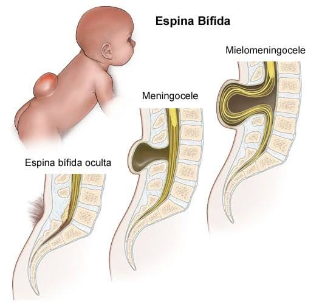
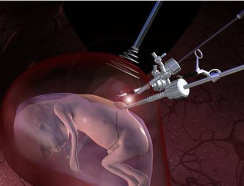

A Mielomeningocele é uma malformação congênita grave, onde a medula espinhal não se fecha completamente devido ao mal desenvolvimento dos ossos da coluna durante o desenvolvimento fetal, o que resulta na exposição da medula, meninges e raízes nervosas. Essa condição pode causar uma variedade de problemas para criança, incluindo dificuldades motoras, incontinência e hidrocefalia.
As causas da mielomeningicele não foram descobertas com exatidão, o que se sabe é que provavelmente fatores geneticos e até ambientais podem influênciar no desenvolvimento da doença, a deficiência do ácido fólico (vitamina b9) é um dos principais riscos da doença, já que ele influencia na formação dos tubos neurais durante a gestação.
O diagnóstico precoce da doença influência muito na vida da criança, no parto e na mãe, ele pode ser feito por meio de exames laboratoriais e ultrassonografia por volta da 18ª á 22ª semana de gestação.
E por mais grave que a doença seja é importante saber que existe sim um tratamento, mas deve-se ressaltar que esse tratamento acontece durante a gestação e após o nascimento, por meio de uma cururgia fetal que deve ser feita até a 27ª semana de gestação, onde a cirurgia pode ser feita a céu aberto que consiste nos médicos fazerem uma incisão na mãe e através do útero com muito cuidado acessam o bebê, com o auxílio de um microscópio e utensílios roboticos removendo a bolsa e arrumam a malformação. A fotoscopia, é indicada apenas em alguns casos, é um procedimento menos invásivo do que a cirurgia á céu aberto, e é feito com uma câmera (fotoscópio) e utensílios por meio de pequenos furos no abdomen da mãe, a cirurgia ela trata a doença porém não as sequelas, mas ainda assim alivia a qualidade de vida da criança e diminui os riscos de algo mais sério como paralisia etc...
Caso não tratada, pode resultar em diversas sequelas que são extremamente sérias e podem causar risco á vida do bebê, dentre elas temos: